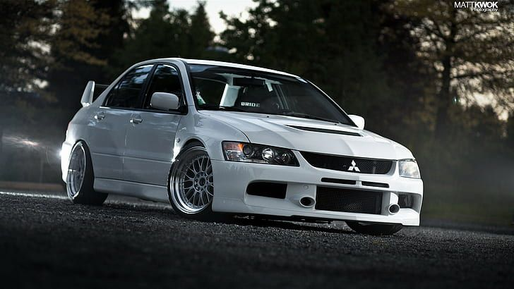

Supra

O Toyota Supra é um automóvel desportivo produzido pela fabricante japonesa Toyota entre 1978 e 2002, e desde 2019 até o presente. O nome "Supra" éderivado do prefixo latino, que significa "acima", "ultrapassar" ou "ir além".
>>SAIBA MAIS<<Honda Civic

O Honda Civic é um automóvel produzido pela Honda desde 1973. Atualmente encontra-se em sua décima primeira geração. Foi eleito duas vezes o Carro do Ano pela revista Autoesporte, em 2007 e em 2017.
>>SAIBA MAIS<<
Mazda RX7

O Mazda RX-7 é um automóvel desportivo produzido pela empresa japonesa Mazda entre 1978 e 2002. Possui tração traseira e motor de até 280 cavalos de potência.
>>SAIBA MAIS<<
Subaru

O Subaru Impreza é um carro compacto fabricado desde 1992 pela Subaru, — a divisão de automóveis da japonesa Fuji Heavy Industries (FHI). O Impreza é apresentado como um substituto para a linha Leone e conhecido por sua confiabilidade mecânica e estabilidade proveniente do sistema de tração S-AWD aliado com o consagrado motor boxer.
>>SAIBA MAIS<<
Skyline

O Nissan Skyline é um carro produzido pela montadora japonesa Nissan, cuja produção iniciou-se em 1957, quando a Prince Motor Company empresa fundada três anos antes pela Tama Electric Car Company, fabricante de veículos elétricos— lançou o modelo ALSI-1, com motor da Fuji Precision Industries de 1,5 litro e 60bhp(61cv).
>>SAIBA MAIS<<
Lancer Evolution

O Lancer Evolution, (também apelidado de Lancer Evo) é um sedan de alto desempenho baseado no Mitsubishi Lancer que foi fabricado pela Mitsubishi Motors entre 1992 e 2015. Das dez versões fabricadas, todas utilizam um motor de 2 litros, com turbo e tração nas quatro rodas.
>>SAIBA MAIS<<
SOBRE JDM'S

é a sigla para Japanese Domestic Market, ou “Mercado Doméstico Japonês” os produtos feitos no Japão para serem comercializados dentro do Japão. E isto, obviamente, inclui os carros. Só que esta é a definição literal de JDM, aquela que você vai encontrar na Wikipedia. A definição cultural no mundo automotivo, a que nos interessa neste guia, tem muito mais a ver com um estilo de personalização inspirado nos carros japoneses e adotado no mundo todo, com várias vertentes É deles que vamos falar hoje.
A história do JDM está ligada ao automobilismo japonês. Diferentemente do que acontece na Europa e nos EUA, não há muitos registros sobre a história automobilística japonesa,ao menos, não no ocidente. O que significa que a maior barreira para entendermos as raízes do estilo japonês de personalização é o idioma. Mas isso não nos impede de ir a fundo e descobrir de onde vem a cultura de rua do Japão.